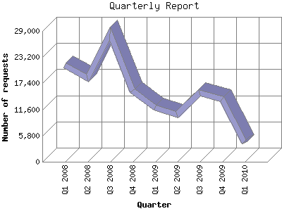

The Quarterly Report shows total activity on your site for each quarter of a
year. Remember that each page hit can result in several server requests as the
images for each page are loaded.
Note: Most likely, the first and
last quarters will not represent a complete quarter's worth of data, resulting
in lower hits.

| Quarter | Number of requests | Number of page requests | |
|---|---|---|---|
| 1. | Q1 2010 | 4,174 | 1,930 |
| 2. | Q4 2009 | 13,864 | 5,871 |
| 3. | Q3 2009 | 15,263 | 5,570 |
| 4. | Q2 2009 | 10,473 | 4,375 |
| 5. | Q1 2009 | 12,055 | 4,824 |
| 6. | Q4 2008 | 15,794 | 5,991 |
| 7. | Q3 2008 | 28,404 | 8,168 |
| 8. | Q2 2008 | 18,555 | 6,218 |
| 9. | Q1 2008 | 21,381 | 5,315 |
Most active quarter Q3 2008 : 8,168 pages sent.
Quarterly average: 5,362 pages sent. 15,551 requests handled.
This report was generated on January 24, 2010 01:22.
Report time frame February 10, 2008 00:40 to January 24, 2010 01:20.